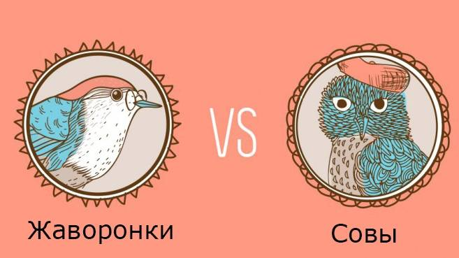

Жаворонки против сов

Жаворонки рано встают и рано ложатся.
Подъём в 5–8 утра. Отбой обычно не позднее
10 часов вечера. Наиболее продуктивны и
работоспособны до полудня. Во второй половине
дня не могут решать задачи эффективно. К вечеру
абсолютно вымотаны.
Совы поздно встают и поздно ложатся. Подъём в 9
часов утра и позже. Отбой, как правило, за
полночь. Пик продуктивности приходится на
послеобеденное время и вечер. Раннее пробуждение
выбивает из колеи.